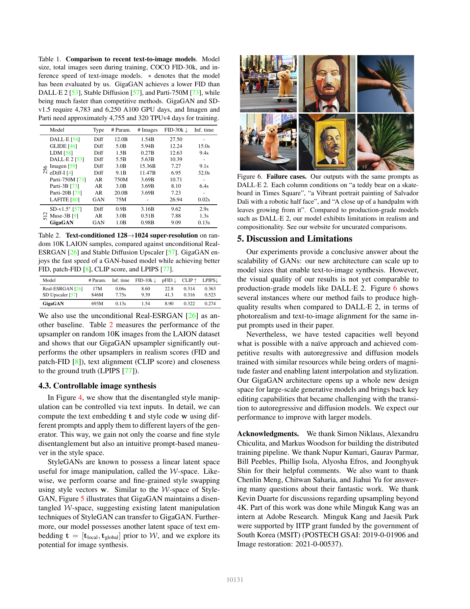
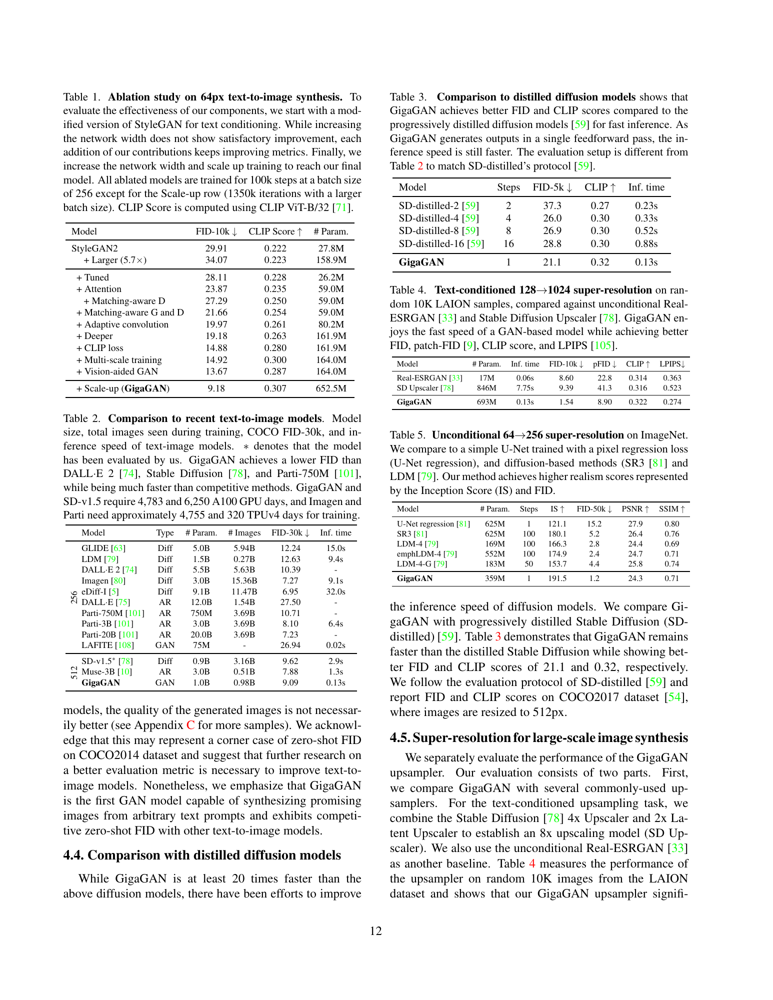

一句话结论
GigaGAN证明动态卷积、注意力与多尺度监督可把生成对抗网络（GAN）扩展为低延迟文生图系统，但较低FID并未消除结构和组合失败，不能据此宣布GAN全面优于扩散或自回归模型。
问题定义
直接增宽StyleGAN在复杂互联网文生图上失稳；需要解释GAN如何扩大条件表示能力，同时保留前馈速度与潜空间控制。本文是对“只有迭代式生成才能扩展”的反例，不是统一生成—编辑或扩散蒸馏方法。（正式pp.1、3）
方法概述
- 条件入口：冻结CLIP词表示经可训练Transformer形成局部/全局描述；全局与随机z映射为w，局部参与cross-attention。
- 容量扩展：w以softmax混合滤波器库（filter bank），随后执行StyleGAN式权重调制；L2 self-attention、cross-attention与卷积交替，并配合初始化、残差缩放与权重衰减稳定训练。
- 监督：64px图像金字塔进入多尺度输入/输出判别器，real/fake错配监督、CLIP对比损失与视觉辅助判别器共同训练。
- 上采样：独立非对称U-Net把64提升至512，另有128→1024上采样模型；LPIPS与噪声增强连接低分辨率到高分辨率。所谓“单步”指各模块前馈，不是完整系统只有一次网络调用。（正式pp.4–6，Fig2/3）
关键发现
正式主表：低延迟不等于全面质量领先
- 文生图：约1.0B生成参数（652.5M基础+359.1M超分），COCO FID-30k 9.09，512px生成 0.13s；SD-v1.5为9.62/2.9s。但Imagen7.27、Parti-20B7.23更低，作者也明确承认真实感与组合能力不及DALL·E2。没有系统人评或置信区间。（正式pp.7–8，Table1/Fig6）
- 超分辨率：128→1024模型为693M，FID1.54、patch-FID8.90、CLIP0.322、LPIPS0.274、0.13s。它快于表中的SD upscaler7.75s，慢于Real-ESRGAN0.06s；二者文本条件权限也不同。（正式p.8，Table2）
- 4K边界：3.66s/16Mpixel来自上采样演示，不是固定512模型上完整的4K文生图质量评测。潜空间插值和风格混合不等于对真实输入图的指令编辑。（正式pp.2、7–8）

作者扩展版：消融存在指标取舍
扩展v2 p.12 Table1显示：多尺度训练使FID 14.88→14.92、CLIP 0.280→0.300；加Vision-Aided使FID 14.92→13.67，CLIP却 0.300→0.287。只对判别器施加matching-aware时FID也变差。不能把“逐步加模块”写成各指标单调改善；最后scale-up同时增加容量、训练步数和batch，不能孤立为架构因果。
扩展Table5中ImageNet超分FID1.2较好，但PSNR24.3/SSIM0.71弱于U-Net回归27.9/0.80与SR3 26.4/0.76。它补充的是感知与重建的取舍，不是文生图人评胜出。扩展附录FigA7还将提示式风格变换限制为单个简单物体；更强截断（truncation）提高CLIP而降低多样性。（扩展pp.12、22–33）

数据、成本与评测边界
- 扩展版说明LAION2B-en+COYO-700M经过分辨率、CLIP、美学和水印过滤；128→1024模型另用Adobe内部Stock。未披露过滤后独立图像总数与COCO近重复审计，表中0.98B是训练曝光而非唯一图片数。污染未知，不指控已泄漏。（扩展pp.9、18）
- COCO2014真实40504、生成30000；蒸馏对照另用COCO2017/5k/512px，不能把两表FID并成同曲线。统计应按源图片/提示词聚类，不能以重复seed假增独立样本。（扩展pp.12、18）
- 正式Table1报告 4783 A100 GPU-days；工具换算为114792名义GPU-hours，不是本轮实测。扩展配置使用96–128 A100训练base、64 A100训练512上采样器；推理batch、计时分项与峰值显存未充分报告，TF32训练配置不能推定为推理精度。低推理延迟不是低训练门槛。
- 基线数据、训练曝光、encoder、输出分辨率与质量点不齐；CLIP又参与数据筛选、训练损失和评测。缺异构人评，不据单一FID/CLIP宣称语义或人类偏好领先。
局限或疑问
- 正式版与扩展版要分开：CVF正式表1误将初代DALL·E写为Diff，扩展表2改为AR；扩展消融/蒸馏表不是CVF表。正式主文五尺度预测文字与总数公式还有计数口径疑点，无实现不能擅改。
- 主张的最强反证来自作者自身：较低FID同时伴随床腿、花瓶、条纹、脸部与复杂关系失败；没有人评证明总体视觉质量更好。
- 开放评测不等于开放模型：固定SHA仓库提供网页、评测脚本和预生成图片链接；本轮未见生成器训练实现/权重，未运行GPU或重算正式指标。
- 代码需先验收输入完整性：原始loader自然排序PNG后按位置与caption进行zip，无长度/ID检查。四项离线审计通过：额外图像静默被截、缺中间图像导致错配、完整控制正常、FID不使用
how_many而CLIP使用。仅合成文件与AST检查，不是实际发布图片包损坏或原榜单错误的证据。 - 评测版本需冻结：COCO脚本默认ViT-B/32，而扩展正文通常写ViT-G/14；代码支持另一分支但内部为
ViT-g-14。README的9.06/3.53是作者重算，不覆盖正式9.09/3.45。复现应锁定encoder/checkpoint、resize与图像manifest。
原始链接
相关页面
- topics/image-generation：同质量点的范式比较与前馈反例。
- topics/generative-model-evaluation：统计指标、视觉质量与真实条件遵循应分开。
- sources/2026-09-11-guidance-matters：强度校准与预算公平，GAN截断同样需要扫描。
备注
原始证据、独立analysis、固定代码与合成审计结果保存在raw目录；正式11页全文已核验，补充版实验/附录按版本标注。未升级研究阶段、未声称系统文献覆盖、未运行完整模型或人评复现。